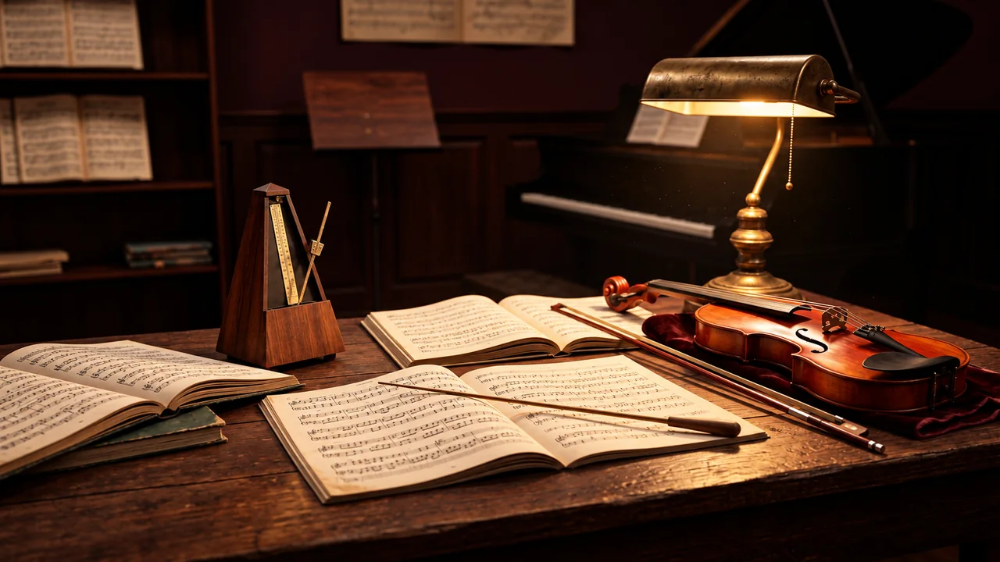

Kalimba
Descubra o instrumento e suas primeiras notas.
Baixar guia em PDF →Comece aqui: escolha seu percurso musical →
WALAMORT · MÚSICA SEM FRONTEIRAS
Um universo para descobrir instrumentos, desenvolver o ouvido musical e transformar ideias em música. Comece do seu jeito, no seu ritmo.

Há recursos em português do Brasil: página inicial, menus, busca, métodos de instrumento, leitura de pentagrama, mão musical, ditado no pentagrama, ditado melódico, prática rítmica, percurso de sete sessões e acompanhamento. As ferramentas ainda não traduzidas abrem em espanhol ou inglês, com o idioma indicado. A tradução da plataforma está sendo ampliada.
Ouça melodias, responda no teclado e pratique o ritmo com avaliação de precisão. Seu progresso fica salvo neste navegador.
Três guias gratuitos para começar a explorar a percussão melódica.
Descubra o instrumento e suas primeiras notas.
Baixar guia em PDF →Comece a explorar sons, ressonância e pulsação.
Baixar guia em PDF →Conheça o instrumento e comece a criar seus padrões.
Baixar guia em PDF →Leitura de partitura, percepção musical, ditados e preparação para a faculdade de música.
Encontrar exercícios →Kalimba, handpan, tongue drum, braço de guitarra e baixo e banco de sons.
Explorar instrumentos →Composição, ritmos, arranjos, mixagem e efeitos para experimentar pelo navegador.
Encontrar o laboratório →Walter Agudelo Múnera é músico, produtor musical e professor em Medellín, Colômbia. A Walamort reúne aprendizagem, instrumentos do mundo e criação musical.
Consultar aulas e projetos · página em espanhol →Use a busca em português para encontrar uma atividade. Os resultados mostram quando a ferramenta está em espanhol. Você também pode escolher English no seletor de idiomas para abrir as versões em inglês disponíveis.
As atividades gratuitas podem ser exploradas sem conta. Métodos e serviços possuem suas próprias condições, informadas nas páginas correspondentes.
Kalimba, handpan e tongue drum: níveis básico, intermediário, avançado e pacotes, com PDF nos três idiomas.
Conhecer os métodos →Pratique dois tempos por compasso, cada um com três colcheias. Ouça, escreva e revise cada compasso após avaliar.
Praticar em 6/8 →Pratique também notas sustentadas e ligaduras entre compassos.
Praticar ligaduras →